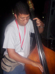
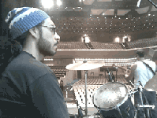

www.cusica.com (en español,
edición de lujo
en cartón, también para descargar, en
Bs.) Mercadolibre (en español, edición de lujo
en cartón, en
Bs.) Amazon
(en
inglés, cajita
joyera de
plástico, en US
$)
Emilio Mendoza
Guitarra
Godin, guitarra española, dirección y producción
Jesús Eduardo
Milano
Contrabajo
Lerryns
Hernández
Batería
 
Emilio Mendoza, Guitarra Godin,
foto Simancas, Jesús
Daniel Milano, Cb., Lerryns Hernández, Batería (cortesía
Meinl Percussion)
Foto (izq
a der..): Emilio Mendoza, Chacao, Wilmer Mujica, San Juan de los Morros, Tour de los
Llanos,
3er. Festival Internacional de Música Urbana,
2006. (der.) Archivo personal L. H.
La
pieza fue dedicada al aire en movimiento, es decir,
al viento. Esta idea, como sucede en las
composiciones que describen ríos, mares o tormentas,
afectó el resultado sonoro en términos de su
estructura musical en función de una caracterización
de flujo constante, de movimiento, de cerca y lejos
y de vueltas, movimiento horizontal, invisible, casi
de fantasmas y espíritus, de soledad y rapidez
volátil. Especialmente en el final de la pieza, se
tomó cuidado de expresar esta sensación con el
trémolo de la guitarra en una sola cuerda (1), y el
trémolo sul ponticello del contrabajo, que suena a
un murmullo perdiéndose en la distancia del
silencio.
{kind=link}